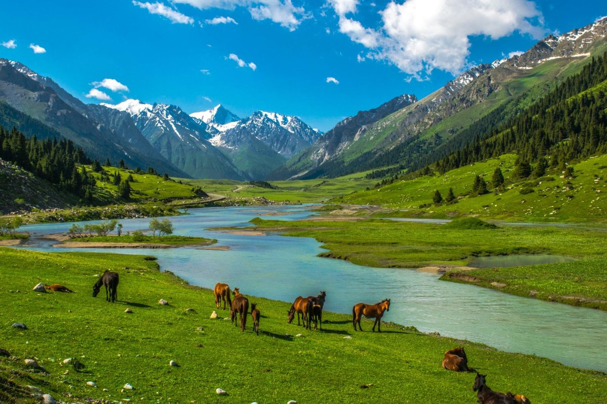

Развлечения
Помимо природы, в Кыргызстане есть множество развлечений: скалолазание, велосипедные прогулки, рафтинг, альпинизм и даже культурные мероприятия.

В Кыргызстане вы можете насладиться разнообразными видами отдыха: горные походы, пешие прогулки, верховая езда, катание на лошадях и многое другое.
Помимо природы, в Кыргызстане есть множество развлечений: скалолазание, велосипедные прогулки, рафтинг, альпинизм и даже культурные мероприятия.
Кыргызстан имеет богатую историю, связанную с древними цивилизациями, Великим Шелковым путем и великими завоевателями. Изучите уникальные археологические памятники и исторические места.

Узнайте о культурном наследии Кыргызстана: его национальной кухне, музыке, традициях, народных ремеслах и праздниках.

Кыргызстан славится своими красивыми горами, озерами, водопадами, живописными долинами и уникальной флорой и фауной. Посетите национальные парки и заповедники, чтобы насладиться этой красотой.